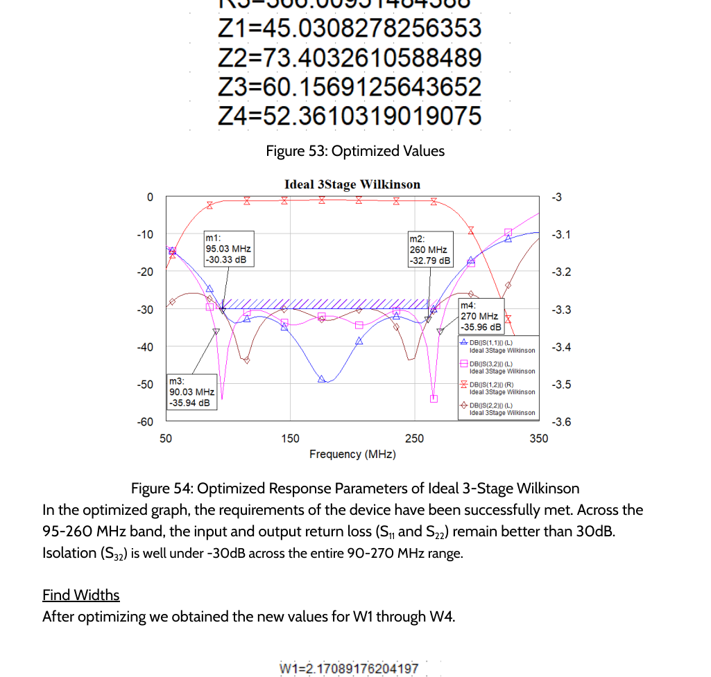
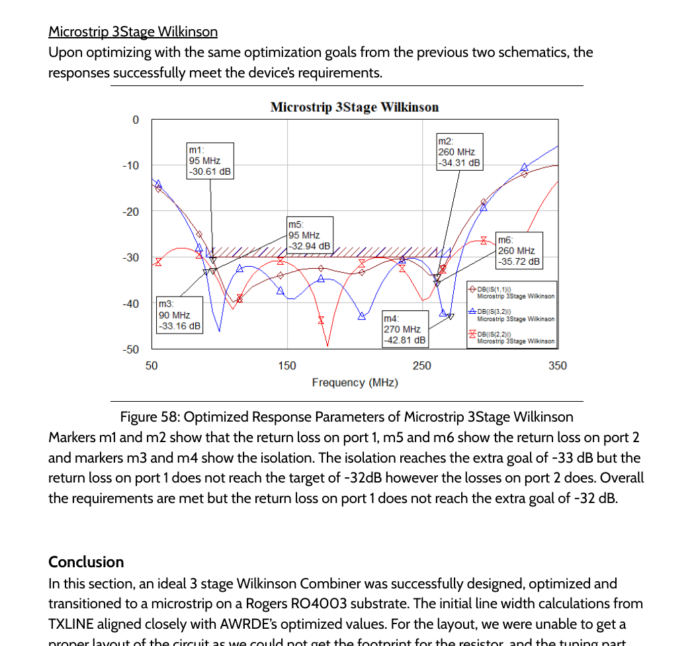

Calculated the starting design
Used analytical calculations, MATLAB and TXLINE to establish transmission-line dimensions and cross-check the results.
Designed and optimized a three-stage Wilkinson circuit that divides or combines RF power while reducing unwanted reflections and maintaining strong performance across a wider operating range.

A simple RF combiner performs best near one target frequency. I compared multiple approaches and developed a multi-stage design that maintained stronger performance across a broader range.
The single-stage approach was simpler but concentrated its best performance near one frequency. I selected the three-stage Wilkinson structure after comparing alternatives, then optimized the impedances and converted them into manufacturable microstrip widths.
I worked across the complete design path rather than only the final simulation.
Used analytical calculations, MATLAB and TXLINE to establish transmission-line dimensions and cross-check the results.
Studied simpler and multi-stage matching structures to understand how the number of sections affected usable bandwidth.
Tuned circuit values and physical dimensions to improve matching and output separation across the target range.
Converted the ideal circuit into a physical design on Rogers RO4003 and checked the resulting performance.
The strongest evidence is the simulated response after optimization and the final physical microstrip model.


The ideal and microstrip simulations met the core electrical requirements. The physical transmission-line model was completed, while final PCB layout tuning remained limited by the available resistor footprint. That limitation is stated directly rather than presenting an unfinished board layout as fabricated hardware.